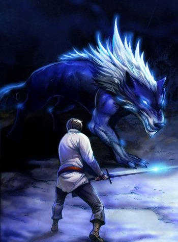

<section id="content">
	<div id="container">
		<div class="manga-classic">
			
			<p class="manga-title">The Breaker: New Wave</p>
			<p class="manga-genre"><span class="genre">Genre:</span>Action, Comedy, Drama, Martial Arts</p>
			<p class="manga-description"><span class="description">Description:</span> <span class="details">In the aftermath of the desperate battle between Goomoonryong and the Martial Arts Alliance -- Yi Shioon's ki-center was destroyed by his own master Goomoonryong, leaving him unable to practice martial arts...
			<br /><br />
			Even though Shioon is no longer a murim-in, more assailants continue to pursue him. Through his encounter with Goomoonryong, the bullied boy has grown in to a respectable man. However, Shioon must now learn to survive in this chilly world of Murim without his master...</span> </p>
		</div>

		<div class="manga-classic">
			
			<p class="manga-title">The Legendary Moonlight Sculptor</p>
			<p class="manga-genre"><span class="genre">Genre:</span>Action, Adventure, MMORPG, VR</p>
			<p class="manga-description"><span class="description">Description:</span> <span class="details">The man forsaken by the world, the man a slave to money and the man known as the legendary God of War in the highly popular MMORPG Continent of Magic. With the coming of age, he decides to say goodbye, but the feeble attempt to earn a little something for his time and effort ripples into an effect none could ever have imagined. Through a series of coincidences, his legendary avatar is sold for 3.1 billion won ($2.7 million), bringing great joy to him, only to plunge him into despair at losing almost all of it to vicious loan sharks.</span> </p>
		</div>
	</div>
</section>